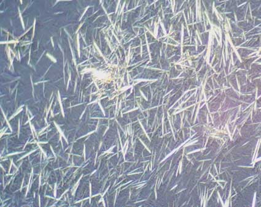
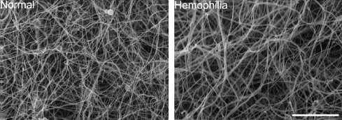

Uric Acid
Did you know that...
Gout is caused by an accumulation of sodium urate crystals in the joints. The crystals form when the amount of uric acid in the body reaches an abnormally high level.
Everyone has uric acid, which is naturally present in small amounts. It's a waste product that results from the body's normal process of cells dying and releasing purines. It also accumulates from the body absorbing purines contained in some foods.

Additional Information
Hemophilia

Related Disease
Hemophilia is not one disease but rather one of a group of inherited bleeding disorders that cause abnormal or exaggerated bleeding and poor blood clotting. The term is most commonly used to refer to two specific conditions known as hemophilia A and hemophilia B, which will be the main subjects of this article. Hemophilia A and B are distinguished by the specific gene that is mutated (altered to become defective) and codes for a defective clotting factor (protein) in each disease.